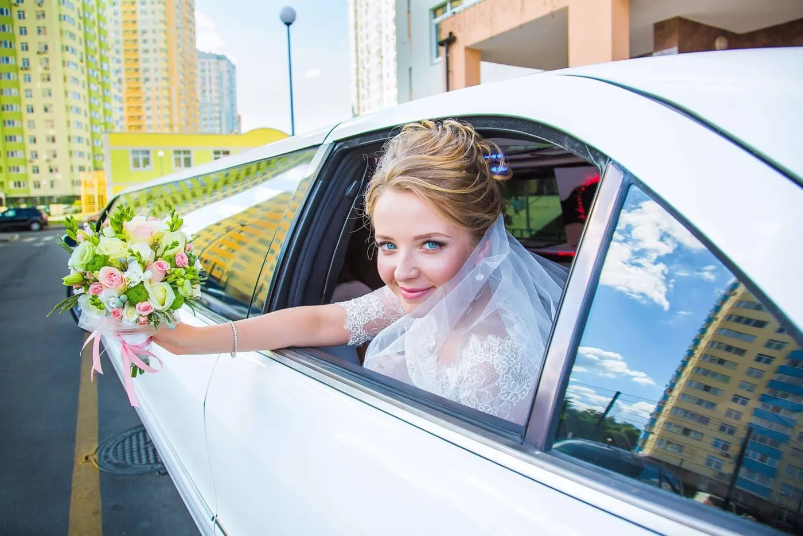

Regarding weddings in the Big Apple, making a grand entrance is as essential as finding the perfect wedding venues in New York. After all, this is the city where even pizza rats know how to make a scene! But fear not lovebirds – we’re not suggesting you arrive at your nuptials on the back of a subway-dwelling rodent.
Instead, let’s talk about how to truly dazzle your guests with luxury vehicles that’ll make your big day entrance unforgettable.
Picture this: You’re gliding through the bustling streets of New York, turning heads faster than a celebrity sighting in Central Park. Your chariot? Not a pumpkin (sorry, Cinderella), but a sleek, jaw-dropping luxury vehicle that screams “I do” in the most glamorous way possible. Whether you’re dreaming of a classic Rolls-Royce that oozes old-world charm or a cutting-edge Tesla that’s as eco-friendly as it is chic, we’ve got the scoop on how to arrive at your wedding venue in style.
So buckle up, soon-to-be-newlyweds! We’re about to take you on a ride through the world of luxury wedding transportation that’s smoother than a Manhattan cocktail and more exciting than finding a rent-controlled apartment in the West Village. Let’s explore how you can make your grand entrance the talk of the town – well, at least until your first dance or Uncle Bob’s infamous karaoke performance.
1. Making a Grand Entrance: Luxury Vehicles for Your Big Day
Making a grand entrance on your wedding day sets the tone for the entire celebration, and there’s no better way to do it than with a luxurious vehicle. In New York City, where style and sophistication are part of the daily hustle, arriving at your venue in a high-end car isn’t just an option—it’s a rite of passage. From classic limousines that exude timeless elegance to modern marvels of automotive engineering, your transportation choice can be as unique as your love story.
Let’s explore some of the most impressive options that will have your guests talking long after the last dance.
1.1. Classic Elegance: Vintage Cars and Limousines
Classic elegance meets NYC wedding charm with vintage cars and limousines. Picture yourself arriving in a gleaming 1950s Rolls-Royce Silver Cloud or a sleek 1960s Cadillac DeVille, turning heads and capturing hearts. These timeless vehicles not only provide luxurious transport but also serve as stunning photo backdrops against the city’s iconic scenery.
From roomy vintage stretch limos to intimate classic cars, these options add a touch of nostalgia and Hollywood glamour to your big day. Remember to book early – these crowd-pleasers are in high demand for NYC nuptials!
1.2. Modern Sophistication: High-End SUVs and Sedans
Modern sophistication takes center stage with high-end SUVs and sedans for NYC weddings. Glide through Manhattan in a sleek Tesla Model S or make a bold statement in a Range Rover. These contemporary vehicles offer cutting-edge technology, plush interiors, and ample space for wedding attire.
Options like the Mercedes-Benz S-Class or BMW 7 Series combine luxury with practicality, perfect for navigating diverse city landscapes. Ideal for tech-savvy couples, these rides ensure you arrive at your venue feeling relaxed and impeccable while showcasing your modern taste.

1.3. Unconventional Choices: Luxury Celebration Buses and Hummers
For couples who want to start the party before they even reach the venue, luxury party buses, and stretch Hummers offer a fun and unconventional twist on wedding transportation in NYC. These larger-than-life vehicles turn heads on city streets while providing ample space for the wedding party to travel together. Imagine cruising past iconic landmarks in a decked-out party bus with mood lighting, sound systems, and dance floors. Or picture a sleek stretch Hummer rolling up to your venue, its imposing presence announcing your arrival in grand style.
These options aren’t just about getting from A to B – they’re about creating unforgettable memories with your closest friends and family from the moment you set out. Perfect for those who believe the journey is as important as the destination on their big day.
2. Beyond the Ceremony: Incorporating Luxury Transport Throughout Your Wedding
Luxury transportation isn’t just for making a grand entrance at your wedding ceremony – it can enhance every aspect of your New York City wedding. From pampering your wedding party to ensuring guests arrive on time and creating magical moments after the reception, high-end vehicles can play a crucial role throughout your special day.
By thoughtfully incorporating luxury transport into different parts of your wedding, you’re adding a touch of glamour and creating a seamless, stress-free experience for everyone involved. Let’s explore how you can use premium transportation to elevate your entire wedding day, making it a truly unforgettable NYC celebration from start to finish.
2.1. Pre-Wedding Pampering: Spa Day Transportation for the Wedding Celebration
Elevate your pre-wedding pampering with a touch of New York glamour by whisking your bridal party to the spa in luxurious transportation. Imagine your wedding party cruising through New York City in a sleek limousine or spacious luxury van, sipping champagne as you head to a top-notch spa. This adds an extra layer of indulgence to your pampering session and ensures everyone arrives relaxed and on time. It’s a great way to bond with your bridesmaids or groomsmen, escape the last-minute wedding stress, and set a luxury tone for future celebrations.
Let a pro handle the wheel so you can focus on the pre-wedding bliss instead of battling NYC’s notorious traffic and parking woes. It’s the perfect way to start your wedding day countdown, combining relaxation, luxury, and quality time with your closest friends.
2.2. Guest Shuttle Services: Ensuring Comfort and Punctuality
Providing luxury shuttle services for your guests is a thoughtful touch that enhances the overall wedding experience in NYC. By offering high-end transportation, you’re not just ensuring punctuality – you’re treating your guests to New York City glamour.
Imagine sleek mini-buses or a fleet of luxury SUVs whisking your loved ones from their hotels to the ceremony and reception venues. Say goodbye to wedding-day transportation headaches as our service navigates the city maze for you, ensuring a smooth ride without parking or taxi hassles.
These shuttles can be a welcome introduction to the city’s energy for out-of-town guests. En route, they might catch glimpses of iconic landmarks, turning travel time into a mini sightseeing tour.
Moreover, shuttle services can help keep your wedding on schedule. With professionals handling transportation, you reduce the risk of delays due to late arrivals or guests getting lost.

As a bonus, providing this service encourages responsible celebration. Party worry-free as our shuttles guarantee a safe ride home, letting you enjoy your guest’s celebration without designated driver duties.
By incorporating guest shuttle services, you’re solving a logistical challenge, extending your hospitality, and setting the tone for an unforgettable NYC wedding experience.
2.3. Post-Reception Adventures: Late-Night City Tours for the Newlyweds
After the last dance and fond farewells, keep the magic of your NYC wedding alive with a late-night city tour for just the two of you. Picture yourselves nestled in the back of a luxury sedan or vintage car, champagne in hand, as your chauffeur guides you through the twinkling lights of Manhattan. Cruise past iconic landmarks like Times Square, the Empire State Building, or along the romantic Brooklyn Bridge, all aglow in the night. This intimate journey offers a perfect opportunity to reflect on your special day and begin your new life together, surrounded by the energy of the city that never sleeps. It’s a romantic, private conclusion to your wedding festivities and a uniquely New York way to start your honeymoon adventure.
3. Customizing Your Luxury Transportation Experience for NYC Weddings
Customizing your luxury transportation for an NYC wedding elevates it from mere conveyance to an integral part of your celebration. In a city known for its flair and individuality, personalizing your wedding day transport adds a unique touch that reflects your style as a couple. From aligning vehicle decor with your wedding theme to curating onboard entertainment and planning photo stops at iconic city locations, customization transforms your transportation into a memorable experience. This attention to detail impresses your guests and creates lasting memories for you and your partner. Let’s explore how you can tailor your luxury rides to perfectly complement your New York City wedding, ensuring every moment – even those on the move – is unique and uniquely yours.
3.1. Themed Decorations: Aligning Your Transport with Your Wedding Style
Aligning your luxury transportation with your wedding theme creates a cohesive and unforgettable experience for your NYC nuptials. Whether you’re going for vintage glamour, modern chic, or NYC-inspired elegance, your vehicle can be transformed to match. Imagine a classic Rolls-Royce adorned with delicate floral garlands for a romantic spring wedding or a sleek limo with art deco-inspired accents for a Great Gatsby-esque affair. Custom monograms, balloon arrangements, or even mini NYC skyline cutouts can add personalized touches.
For an authentic New York feel, consider decorations that nod to the city’s icons – think miniature yellow taxi ornaments or subtle Empire State Building motifs. These themed decorations make for stunning photo opportunities and ensure your grand entrance (and exit) perfectly complement your overall wedding vision.
3.2. Onboard Entertainment: Creating Memorable Moments En Route
Transform your wedding day transportation into an experience with carefully curated onboard entertainment. Consider setting up a custom playlist for NYC weddings featuring iconic New York artists or songs about the city to get everyone in the Big Apple spirit. Equip your luxury vehicle with a top-notch sound system and maybe even a small screen for a slideshow of your relationship milestones.
For a touch of whimsy, include NYC-themed trivia games or provide disposable cameras for guests to capture candid moments. If you’re opting for a larger vehicle like a party bus, you could even arrange for a professional mixologist to serve signature cocktails inspired by famous New York establishments.
These thoughtful touches not only keep your wedding party engaged and excited but also create fun, shareable moments that become part of your wedding day story.
3.3. Photography Opportunities: Iconic NYC Backdrops for Wedding Portraits
Incorporating iconic NYC backdrops into your wedding portraits is a fantastic way to make your luxury transportation experience unforgettable. Work with your chauffeur and photographer to plan strategic stops at some of the city’s most photogenic locations. Imagine capturing a kiss in front of the majestic Bethesda Fountain in Central Park or striking a pose with your bridal party on the Brooklyn Bridge with the Manhattan skyline in the background.
For a classic New York moment, have your luxury vehicle pull up in front of the Flatiron Building or Times Square for some show-stopping shots. Don’t forget the charm of New York’s diverse neighborhoods – from the cobblestone streets of the West Village to the artistic murals of Williamsburg.
These carefully planned photo ops not only result in stunning, uniquely New York wedding albums but also allow you to experience the city’s magic on your special day. Your luxury transportation becomes more than just a ride – it’s your ticket to an analyzed NYC wedding photo tour.
Summary
As you plan your dream wedding in the city that never sleeps, remember that luxury transportation is more than just a way to get from point A to point B—an integral part of your New York City love story. From making a grand entrance in a vintage Rolls-Royce to cruising through the illuminated streets for a post-reception tour, every moment spent in these high-end vehicles adds a touch of magic to your special day.
Transform your travels into a personalized NYC adventure by decking out your ride, planning entertainment on the go, and capturing picture-perfect moments at the city’s most iconic spots. So as you envision your perfect wedding, consider how luxury transportation can elevate every aspect of your celebration, turning even the in-between moments into highlights of your NYC nuptials.
After all, in a city where anything is possible, why should your wedding transportation be anything less than extraordinary?